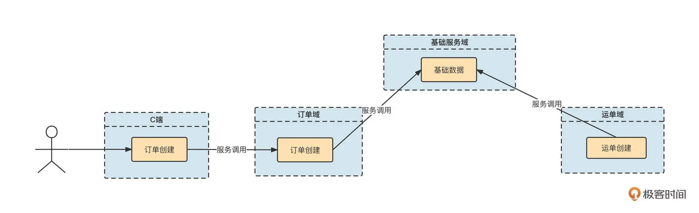
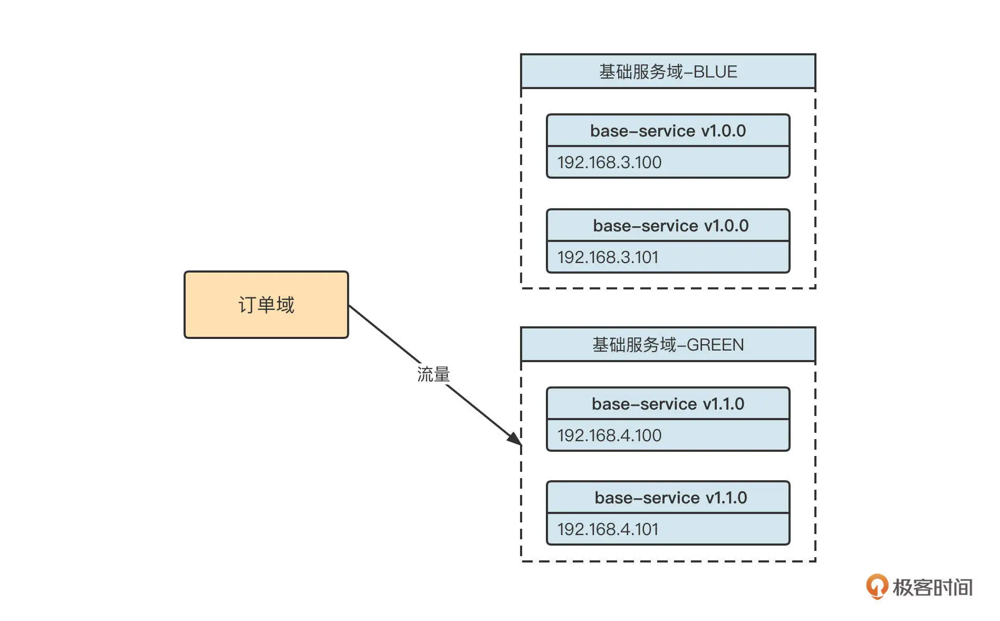
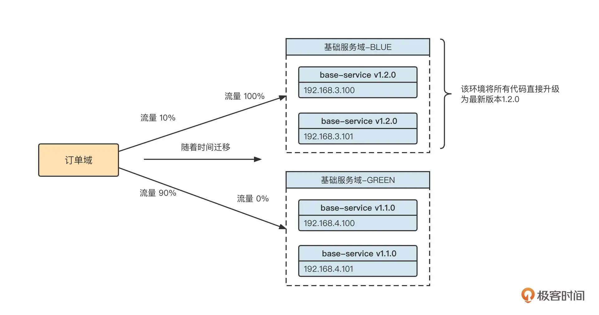
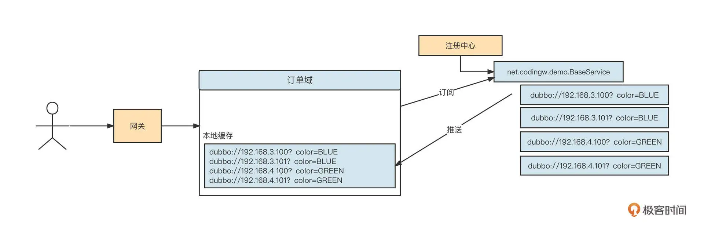
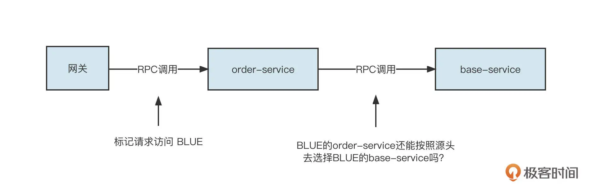
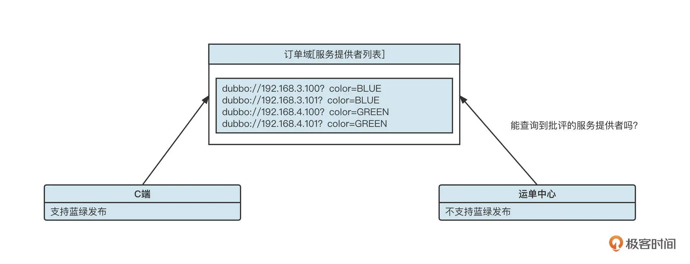
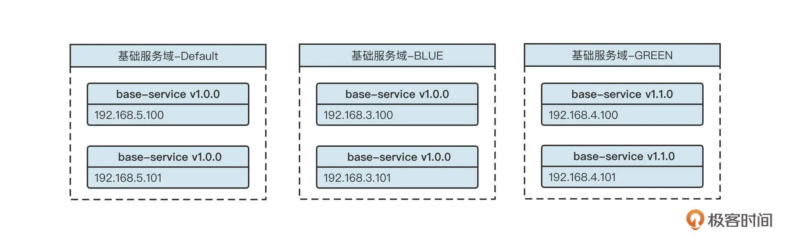
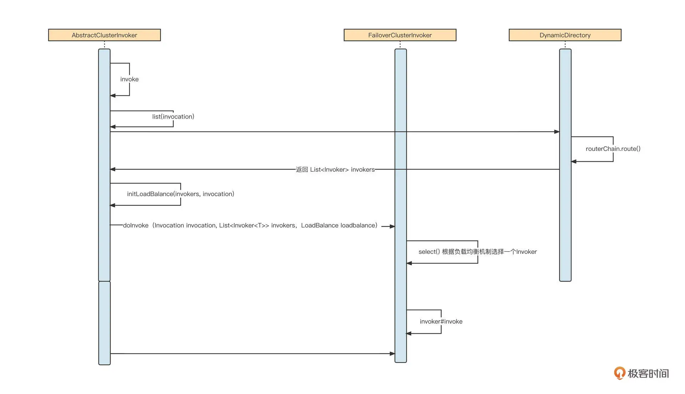

- 00 开篇词 为什么中间件对分布式架构体系来说这么重要？.md
- 01 中间件生态（上）：有哪些类型的中间件？.md
- 02 中间件生态（下）：同类型的中间件如何进行选型？.md
- 03 数组与链表：存储设计的基石有哪些？.md
- 04 红黑树：图解红黑树的构造过程与应用场景.md
- 05 多线程：多线程编程有哪些常见的设计模式？.md
- 06 锁：如何理解锁的同步阻塞队列与条件队列？.md
- 07 NIO：手撸一个简易的主从多Reactor线程模型.md
- 08 Netty：如何优雅地处理网络读写，制定网络通信协议？.md
- 08 加餐 中间件底层的通用设计理念.md
- 09 技术选型：如何选择微服务框架和注册中心？.md
- 10 设计原理：Dubbo核心设计原理剖析.md
- 11 案例：如何基于Dubbo进行网关设计？.md
- 12 案例：如何实现蓝绿发布？.md
- 13 技术选型：如何根据应用场景选择合适的消息中间件？.md
- 14 性能之道：RocketMQ与Kafka高性能设计对比.md
- 15 案例：消息中间件如何实现蓝绿？.md
- 16 案例：如何提升RocketMQ顺序消费性能？.md
- 17 运维：如何运维日均亿级的消息集群？.md
- 18 案例：如何排查RocketMQ消息发送超时故障？.md
- 19 案例：如何排查RocketMQ消息消费积压问题？.md
- 20 技术选型：分布式定时调度框架的功能和未来.md
- 21 设计理念：如何基于ZooKeeper设计准实时架构？.md
- 22 案例：使用分布式调度框架该考虑哪些问题？.md
- 23 案例：如何在生产环境进行全链路压测？.md
- 大咖助阵 高楼：我们应该如何学习中间件？.md
- 用户故事 学而时习之，不亦乐乎.md
- 用户故事 愿做技术的追梦人.md
- 用户故事 浪费时间也是为了珍惜时间.md
- 结束语 坚持不懈，越努力越幸运.md
12 案例：如何实现蓝绿发布？
你好，我是丁威。
前面，我们讲了服务的注册与发现机制，它是微服务体系的基石，这节课，我想聊聊微服务的另外一个重要课题：服务治理。
随着微服务应用的不断增加，各个微服务之间的依赖关系也变得比较复杂，各个微服务的更新、升级部署给整个服务域的稳定性带来很大挑战。怎么以不停机的方式部署升级微服务呢？
这就是我们这节课的任务，我们来看看如何在生产环境用蓝绿发布来满足不停机升级的要求。
设计背景
在进行技术方案的设计之前，我们先来了解一下生产环境的基本部署情况，如下图所示：

用户在面向用户端（下文通称 C 端）下单后，C 端订单系统需要远程调用订单域中的“创建订单“接口。同时，订单域、运单域相关服务都需要调用基础服务域，进行基础数据的查询服务。
从这里也可以看出，基础服务的稳定运行对整个微服务体系至关重要。那如何确保基础服务域不受版本的影响，始终能够提供稳定可控的服务呢？
设计方案
我们公司为了解决这个问题实现了蓝绿发布。那什么是蓝绿发布呢？
蓝绿发布指的是在蓝、绿两套环境中分别运行项目的两个版本的代码。但是在进行版本发布时只更新其中一个环境，这样方便另一个环境快速回滚。
接下来我们看一下蓝绿发布的基本流程。
如果系统采取蓝绿发布，在下一个版本（base-service v1.2.0）发布之前，会这样部署架构：

当前订单域调用流量进入基础服务域 GREEN 环境。团队计划在 12:00 发布新版本（base-service v1.2.0），这时我们通常会执行下面几个操作。
-
将新版本 1.2.0 全部发布在 BLUE 环境上。因为此时 BLUE 环境没有任何流量，对运行中的系统无任何影响。
-
在请求入口对流量进行切分。通常可以按照百分比分配流量，待系统运行良好后，再逐步将流量全部切换到新版本。
-
如果发现新版本存在严重问题，可以将流量全部切换到原来的环境，实现版本快速回滚。
这个过程可以用下面这张图表示：

这个思路听起来很简单，但是怎么实现呢？
这就不得不提到上节课专门提到的**路由选择（Router）**了，它是 Dubbo 服务调用中非常重要的一步。路由选择的核心思想是在客户端进行负载均衡之前，通过一定的过滤规则，只在服务提供者列表中选择符合条件的提供者。
我们再看上面的实例图，从订单域消费者的视角，服务提供者列表大概是下面这个样子：

然后呢，我们按照比例对入口流量进行分流。例如，80% 的请求颜色为 BLUE，20% 的请求颜色为 GREEN。那些颜色为 BLUE 的请求，在真正执行 RPC 服务调用时，只从服务提供者列表中选择“color=BLUE”的服务提供者。同样，颜色为 GREEN 的请求只选择“color=GREEN”的服务提供者，这就实现了流量切分。
具体的操作是，在 Dubbo 中为这个场景引入 Tag 路由机制。
首先，服务提供者在启动时需要通过“-Dubbo.provider.tag”系统参数来设置服务提供者所属的标签。
例如，在 192.168.3.100 和 192.168.3.101 这两台机器上启动 base-service 程序时，需要添加“-Dubbo.provider.tag=BLUE”系统参数；而在 192.168.4.100 和 192.168.4.101 这两台机器上启动 base-service 程序时，则要添加“-Dubbo.provider.tag=GREEN”系统参数，通过这个操作完成对服务提供者的打标。服务提供者启动后，生成的服务提供者 URL 连接如下所示：
dubbo://192.168.3.100:20880/net.codingw.demo.BaseUser?dubbo.tag=BLUE
下一步，在服务入口对流量进行染色，从而实现流量切分。
蓝绿发布的流量通常是在流量入口处进行染色的。例如，我们可以使用随机加权来实现流量切分算法，用它对流量进行染色，具体示范代码如下：
public static String selectColor(String[] colorArr, int[] weightArr) {
int length = colorArr.length;
boolean sameWeight = true;
int totalWeight = 0;
for (int i = 0; i < length; i++) {
int weight = weightArr[i];
totalWeight += weight;
if (sameWeight && totalWeight != weight * (i + 1)) {
sameWeight = false;
}
}
if (totalWeight > 0 && !sameWeight) {
int offset = ThreadLocalRandom.current().nextInt(totalWeight);
System.out.println("offset:" + offset);
for (int i = 0; i < length; i++) {
if (offset < weightArr[i]) {
return colorArr[i];
}
}
}
return colorArr[ThreadLocalRandom.current().nextInt(length)];
}
//测试代码
public static void main(String[] args) {
String[] colorArr = new String[]{"GREEN","BLUE"};
int[] weightArr = new int[] {100,50};
for(int i = 0; i < 20; i ++) {
System.out.println(selectColor(colorArr, weightArr));
}
}
根据流量切分算法计算得到流量标识后，怎么在消费端跟进流量标识从而进行路由选择呢？我们通常会将染色标记放在 ThreadLocal 中，然后再编写 Filter，获取或者传递路由标签。
但这个只是一个流量的切分算法，那如何动态设置蓝绿的比例或者说权重呢？其实，我们可以为发布系统提供一个设置权重的页面，用户设置完权重后写入到配置中心 (ZooKeeper、Apollo)，然后应用程序动态感知到变化，利用最新的权重进行流量切分。
通过流量切分算法计算出一个请求的流量标识后，通常会存储在 ThreadLocal 中，实现代码如下：
public class ThreadLocalContext {
private static final ThreadLocal<String> tagContext = new ThreadLocal<>();
public static void setTag(String tag) {
tagContext.set(tag);
}
public static String getTag() {
return tagContext.get();
}
public static void resetTag() {
tagContext.remove();
}
}
//在整个请求的入口
String color = selectColor(colorArr, weightArr);
try {
ThreadLocalContext.setTag(color);
//执行第一个远程调用
invokeRpc1();
//执行另外一个远程调用
invokeRpc2();
} finally {
ThreadLocalContext.reset();
}
将请求的流量标识存储到线程本地变量之后，还需要将流量标识附加到 RPC 请求调用中，这样才能触发正确的路由选择，具体代码示例如下：
import org.apache.commons.lang3.StringUtils;
import org.apache.dubbo.common.extension.Activate;
import org.apache.dubbo.common.logger.Logger;
import org.apache.dubbo.common.logger.LoggerFactory;
import org.apache.dubbo.rpc.*;
import org.apache.dubbo.rpc.cluster.router.tag.TagRouter;
import static org.apache.dubbo.common.constants.CommonConstants.CONSUMER;
import static org.apache.dubbo.rpc.Constants.ACCESS_LOG_KEY;
@Activate(group = CONSUMER, value = "tagConsumerFilter")
public class TagConsumerContextFilter implements Filter {
private static final Logger logger = LoggerFactory.getLogger(TagConsumerContextFilter.class);
@Override
public Result invoke(Invoker<?> invoker, Invocation invocation) throws RpcException {
try {
String tag = ThreadLocalContext.getTag();
if(StringUtils.isNotEmpty(tag)) {
invocation.setAttachment(TagRouter.NAME, tag );
}
} catch (Throwable t) {
logger.warn("Exception in TagConsumerContextFilter of service(" + invoker + " -> " + invocation + ")", t);
}
// 调用链传递
return invoker.invoke(invocation);
}
}
这样在 RPC 调用的过程中，服务调用者就能根据本地线程变量中存储的流量标记，选择不同机房的服务提供者，从而实现蓝绿发布了。
同时，在实际生产环境中，一个调用链条中往往会存在多个 RPC 调用，那第一个 RPC 中的路由标签能自动传递到第二个 RPC 调用吗？

答案是不可以，我们需要再写一个服务端生效的 Filter，示例代码如下：
import org.apache.commons.lang3.StringUtils;
import org.apache.dubbo.common.logger.Logger;
import org.apache.dubbo.common.logger.LoggerFactory;
import org.apache.dubbo.common.extension.Activate;
import org.apache.dubbo.rpc.*;
import org.apache.dubbo.rpc.cluster.router.tag.TagRouter;
import static org.apache.dubbo.common.constants.CommonConstants.PROVIDER;
@Activate(group = PROVIDER, value = "tagProviderFilter")
public class TagProviderContextFilter implements Filter {
private static final Logger logger = LoggerFactory.getLogger(TagProviderContextFilter.class);
@Override
public Result invoke(Invoker<?> invoker, Invocation invocation) throws RpcException {
try {
String tag = invocation.getAttachment(TagRouter.NAME);
if(StringUtils.isNotEmpty(tag)) {
ThreadLocalContext.setTag(tag);
}
} catch (Throwable t) {
logger.warn("Exception in TagProviderContextFilter of service(" + invoker + " -> " + invocation + ")", t);
}
// 调用链传递
return invoker.invoke(invocation);
}
}
也就是将调用链中的 tag 存储到服务端的线程本地上下文环境中，当服务端调用其他服务时，可以继续将 tag 传递到下一个 RPC 调用链中。
这样，我们的蓝绿发布就基本完成了。但这里还有一个问题。规模较大的公司的生产环境往往会运行很多微服务，我们无法将蓝绿机制一下引入到所有微服务当中，必然会存在一部分应用使用蓝绿发布，但其他应用没有使用蓝绿的情况。怎么做到兼容呢？
比方说，我们公司目前核心业务域的蓝绿部署情况如下：

这里，订单域接入了蓝绿发布；C 端应用需要调用订单域相关接口，因此也接入了蓝绿发布；但运单中心并未接入蓝绿发布。这时候，运单中心能调用订单域的服务吗？
要回答这个问题，我们要先看看 Dubbo 官方的降级策略。
-
如果消费者侧设置了标签，那么如果集群中没有对应标签的服务提供者，默认可以选择不带任何标签的服务提供者进行服务调用。该行为可以通过设置 request.tag.force=true 来禁止，这就是说如果 request.tag.force 为 true，一旦没有对应标签的服务提供者，就会跑出“No Provider”异常。
-
如果消费者侧没有设置标签，那就只能向集群中没有设置标签的服务提供者发起请求，如果不存在没有标签的服务提供者，则报“No Provider”异常。
回到上面的问题，运单中心由于未接入蓝绿发布，所以不带任何标签，它无法调用订单域的服务。为了解决这个问题，订单域还需要部署一些不带标签的服务。订单域最终的部署大概如下图所示：

也就是说，订单域为了兼容那些还没接入蓝绿发布的应用需要部署 3 套环境，一套为不设置标签的服务提供者，一套为蓝颜色的服务提供者，另一套为绿颜色的服务提供者。
蓝绿发布实践就介绍到这里了，在这节课的最后，我们再来学习一下蓝绿发布底层依托的原理。
实现原理
先来看一下 Dubbo 服务调用的基本时序图：

我建议你按照这张时序图跟踪一下源码，更加详细地了解 Dubbo 服务调用的核心流程与实现关键点，我在这里总结了几个要点：
-
Dubbo 的服务调用支持容错，对应的抽象类为 AbstractClusterInvoker，它封装了服务调用的基本流程。Dubbo 内置了 failover、failfast、failsafe、failback、forking 等失败容错策略，每一个策略对应 AbstractClusterInvoker 的一个实现；
-
在调用 AbstractClusterInvoker 服务的时候，首先需要获取所有的服务提供者列表，这个过程我们称之为服务动态发现（具体实现类为 DynamicDirectory）。在获取路由信息之前，需要调用 RouterChain 的 route 方法，执行路由选择策略，筛选出服务动态发现的服务提供者列表。我们这一课的重点，标签路由的具体实现类 TagRouter 就是在这里发挥作用的。
我们也详细拆解一下 TagRouter 的 route 方法。因为这个方法的实现代码比较多，我们还是分步讲解。
**第一步，**执行静态路由过滤机制，代码如下：
final TagRouterRule tagRouterRuleCopy = tagRouterRule;
if (tagRouterRuleCopy == null || !tagRouterRuleCopy.isValid() || !tagRouterRuleCopy.isEnabled()) {
return filterUsingStaticTag(invokers, url, invocation);
}
如果路由规则为空，则根据 tag 进行过滤。我们顺便也看一下基于 tag 的静态过滤机制是如何实现的：
private <T> List<Invoker<T>> filterUsingStaticTag(List<Invoker<T>> invokers, URL url, Invocation invocation) {
List<Invoker<T>> result;
String tag = StringUtils.isEmpty(invocation.getAttachment(TAG_KEY)) ? url.getParameter(TAG_KEY)
:invocation.getAttachment(TAG_KEY)
if (!StringUtils.isEmpty(tag)) {
result = filterInvoker(invokers, invoker -> tag.equals(invoker.getUrl().getParameter(TAG_KEY)));
if (CollectionUtils.isEmpty(result) && !isForceUseTag(invocation)) {
result = filterInvoker(invokers, invoker ->
StringUtils.isEmpty(invoker.getUrl().getParameter(TAG_KEY)));
}
} else {
result = filterInvoker(invokers, invoker ->
StringUtils.isEmpty(invoker.getUrl().getParameter(TAG_KEY)));
}
return result;
}
尝试从 Invocation（服务调用上下文）中或者从 URL 中获取 tag 的值，根据 tag 是否为空，执行两种不同的策略：
-
如果 tag 不为空，首先按照 tag 找到服务提供者列表中打了同样标签的服务提供者列表，如果 dubbo.force.tag 的设置为 false，则查找服务提供者列表，筛查出没有打标签的服务提供者列表。
-
如果 tag 为空，则直接查找没有打标签的服务提供者列表。
我们继续回到 TagRouter 的 route 方法。第二步操作是，按照路由规则进行筛选，具体代码如下：
// if we are requesting for a Provider with a specific tag
if (StringUtils.isNotEmpty(tag)) {
List<String> addresses = tagRouterRuleCopy.getTagnameToAddresses().get(tag);
if (CollectionUtils.isNotEmpty(addresses)) {
result = filterInvoker(invokers, invoker -> addressMatches(invoker.getUrl(), addresses));
if (CollectionUtils.isNotEmpty(result) || tagRouterRuleCopy.isForce()) {
return result;
}
} else {
result = filterInvoker(invokers, invoker -> tag.equals(invoker.getUrl().getParameter(TAG_KEY)));
}
if (CollectionUtils.isNotEmpty(result) || isForceUseTag(invocation)) {
return result;
} else {
List<Invoker<T>> tmp = filterInvoker(invokers, invoker -> addressNotMatches(invoker.getUrl(),
tagRouterRuleCopy.getAddresses()));
return filterInvoker(tmp, invoker -> StringUtils.isEmpty(invoker.getUrl().getParameter(TAG_KEY)));
}
}
上面这段代码比较简单，它的过滤思路和静态 tag 过滤是相似的。不同点是，这里可以通过 YAML 格式配置单个服务的路由规则。具体的配置格式如下：
force: true
enabled: true
priority: 1
key: demo-provider(服务名称)
tags:
- name: tag1
addresses: [ip1, ip2]
- name: tag2
addresses: [ip3, ip4]
这些数据都会记录在注册中心，并在发生变化后实时通知 TagRouter，从而实现路由规则的动态配置。
总结
好了，这节课就讲到这里。刚才，我们从微服务不停机发布这个需求谈起，引出了蓝绿发布机制。
蓝绿发布的实现要点是对应用分别部署蓝、绿两套环境，在版本稳定后由一套环境对外提供服务，当需要发布新版本时，将新版本一次性部署到没有流量的环境，待部署成功后再逐步将流量切换到新版本。如果新版本在验证阶段遇到严重的问题，可以直接将流量切回老版本，实现应用发布的快速回滚。
然后，我们借助蓝绿发布的指导思想，一步一步实现了基于 Dubbo 的蓝绿发布。
蓝绿发布的底层原理是借助 Dubbo 内置的标签路由功能，其核心思路是，当服务发起调用时，经过服务发现得到一个服务提供者列表，但是并不直接使用这些服务提供者进行负载均衡，而是在进行负载均衡之前，先按照路由规则对这些提供者进行过滤，挑选符合路由规则的服务提供者列表进行服务调用，从而实现服务的动态分组。
课后题
最后，我还是照例给你留一道思考题。
你认为蓝绿发布和灰度发布的共同点是什么，这两者又有什么区别？
欢迎你在留言区与我交流讨论，我们下节课再见！
© 2019 - 2023 Liangliang Lee. Powered by Vert.x and hexo-theme-book.